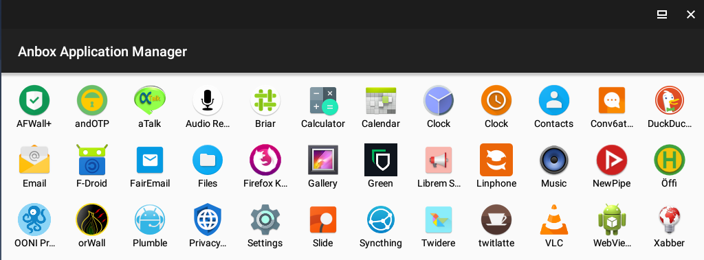
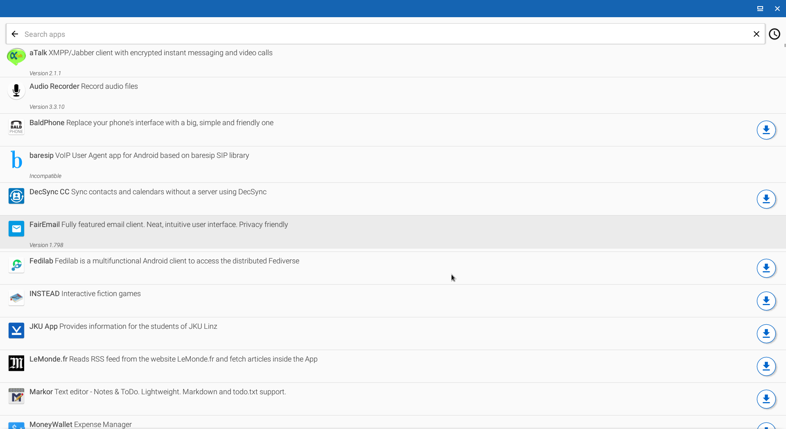
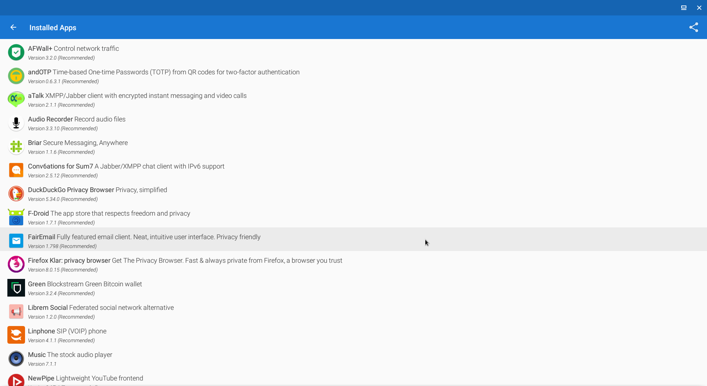
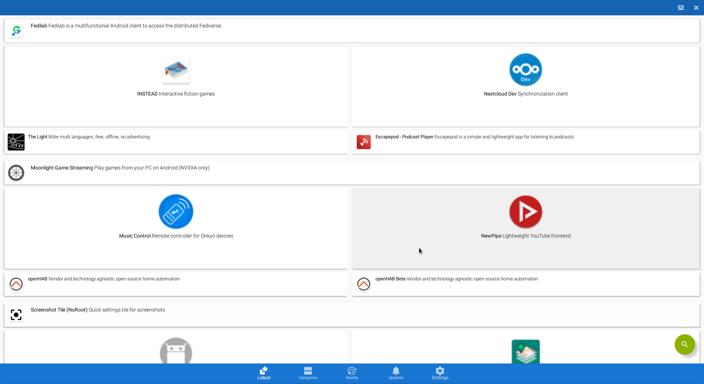

We believe security software like Kicksecure needs to remain Open Source and independent. Would you help sustain and grow the project? Learn more about our 11 year success story and maybe DONATE!
 This page is archived.
This page is archived.
 https://anbox.io/ redirects to https://github.com/anbox which says
it is deprecated.
https://anbox.io/ redirects to https://github.com/anbox which says
it is deprecated.


Anbox allows Android applications and mobile games to run inside Kicksecure.
 COMMUNITY SUPPORT ONLY : THIS WHOLE WIKI
PAGE is only supported by the community. Kicksecure
developers are very unlikely to provide free support
for this content. See Community Support for further information,
including implications and possible alternatives.
COMMUNITY SUPPORT ONLY : THIS WHOLE WIKI
PAGE is only supported by the community. Kicksecure
developers are very unlikely to provide free support
for this content. See Community Support for further information,
including implications and possible alternatives.
Introduction
 Anbox disables the majority of the Android security model
[1] and it uses a very outdated Android version with
known vulnerabilities. [2]
Anbox disables the majority of the Android security model
[1] and it uses a very outdated Android version with
known vulnerabilities. [2]
Anbox is a third party project that allows Android applications and mobile games to run inside Kicksecure. According to the Anbox website: [3]
Anbox puts the Android operating system into a container, abstracts hardware access and integrates core system services into a GNU/Linux system. Every Android application will be integrated with your operating system like any other native application.
To achieve our goal we use standard Linux technologies like containers (LXC) to separate the Android operating system from the host. Any Android version is suitable for this approach and we try to keep up with the latest available version from the Android Open Source Project.
The project is open source and theoretically any application can be run. Anbox does not have direct access to a user's hardware or data. It should be noted that while it is possible to install the Google Play Store, Google will not allow anyone to ship applications if the device is not certified and the vendor has not signed an agreement. [4]
Security Specific
- Do not use physical devices (mobile phones or tablets) for any kind of privacy activities because any physical device has a unique IMEI number which can be easily fetched by Android applications. Always use virtual devices such as Anbox or Waydroid or Android x86 for these kind of activities.
- Always prefer using free and open source (FOSS) Android applications because they usually don't use any kind of surveillance. Using applications from F-Droid repositories is recommended.
- Do not install Android Package Kits (APKs) directly from untrusted sources. [5]
- Always check permissions before starting an application. Note the Android settings menu only allows the user to manage dangerous permissions (such as Camera, Storage, Location, Phone etc.) but not AppOps (application operations) permissions. ADB shell or extended GUI application/permission manager (root required) is needed in order to display and manage not only dangerous but AppOps permissions.
- Do not store any private information inside Anbox or Waydroid or Android x86 filesystems.
- As the Android system cannot prevent applications from accessing the Internet, additional firewall management is required. Android uses Linux iptables firewall manager so a GUI application like AFWall+ can be used to control what applications are allowed to access the Internet (root needed).
- If a proprietary, non-free Android application installation is required An Aurora Store application can be useful for this purpose. Do not use any real (linked to your identity) account. [6]
General Issues
There are several issues with running popular Android applications using Anbox or Android x86 Workstation on top of a non-physical, certified Android device.
Unsupported CPU Architecture
Most popular Android applications (especially from Google Play Store)
were written for ARMv7 and rarely for ARMv8 architectures. Therefore,
some applications do not have support for x86 or x86_64 architectures.
Android x86 users can use the libhoudini library in order
to try to emulate ARMv7 architecture but many Android applications
written for ARM still don't work.
Device Fingerprint
Many non-free, popular Android applications check the device fingerprint for hardware identification purposes. Anbox and Waydroid and Android x86 have emulator fingerprints so applications can easily detect that an emulator is in use. It is generally possible to spoof the device fingerprint, but it is necessary to rebuild the Android image for Anbox/Waydroid. Android x86 can utilize the Magisk module called MagiskHide Props Config in order to spoof the device fingerprint.
Network Interface Detection
Most popular Android applications detect network adapters and will not work properly if no Wi-Fi or mobile connection is established. Anbox/Waydroid uses a bridge network interface by default so some applications will not see the Internet connection. However, Android x86 starting from Nougat has a built-in virtual Wi-Fi interface so applications think that a real Wi-Fi connection is established.
Google Play Services Mechanisms
At present, the biggest problem with running popular Android applications on top of a non-physical Android device is passing SafetyNet by Google. Android consists of two parts:
- The Android system itself (Android Open Source Project). This is a base system.
- A proprietary subsystem called Google Play Services. This helps applications from Google Play Store to interact with Google servers. This is an optional subsystem but all Android devices which are certified by Google have this arrangement.
If only free software (FOSS) applications will be run, then Google Play Services is unneeded since all applications from F-Droid are built without a dependency upon Google Play Services. If some types of proprietary applications are needed, this can be problematic because some will use the Google Play Services mechanism.
Generally, Google Play Services consists of two important parts:
- GCM (Google Cloud Messages)
- SafetyNet
GCM is a proprietary mechanism for delivering Push Notifications from Google servers. GCM is used by ~70-80% of proprietary applications from Google Play Store which rely upon the mechanism. It is not difficult to enable GCM support for Android x86 and Anbox and Waydroid. The Android x86 image comes with built-in, non-free Google Play Services so GCM is enabled by default. With Anbox/Waydroid, it is possible to install either proprietary Google Play Services (OpenGAPPS) or an open-source implementation of Google Play Services called Micro-G.
SafetyNet is a mechanism which verifies the integrity of the device. If a device is not certified by Google Corporation then most of the proprietary Android applications from Google Play Store will not run because many use SafetyNet to check the device is authentic and has not been tampered with. Nowadays there is no way to pass SafetyNet on Android x86 or Anbox/Waydroid because Google uses its own closed-source algorithm for non-real devices detection. SafetyNet is used by ~30-50% of Google Play Store applications, especially those relating to banking and social networks such as Tinder.
Anbox inside Kicksecure Advantages and Disadvantages
There are both distinct advantages and disadvantages of running Android applications in Kicksecure. [7]
Category |
Notes |
|---|---|
Bootloader / Ramdisk |
Anbox does not have any type of bootloader and ramdisk. Consequently it is impossible to install Magisk or some kind of recovery tool which is probably necessary for some operations like hiding root from applications (for example Magisk Hide). |
Emulation |
No emulation is required, therefore Android applications can be run in a native Kicksecure environment. |
Flexibility |
|
Networking |
Anbox does not provide a virtual Wi-Fi ( |
Operating System |
Anbox is not full Android stack implementation or as full operating system similar to Android x86 workstation. |
Software |
Anbox provides only Nougat android version. |
Speed |
Android applications run faster in this configuration. |
Anbox Installation
Base Software
Install package(s)
linux-image-amd64 linux-headers-amd64 adb fastboot anbox
following these instructions:
1 Platform specific notice.
- Kicksecure: No special notice.
- Kicksecure-Qubes: In Template.
2 Update the package lists and upgrade the system.
sudo apt update && sudo apt full-upgrade
3
Install the
linux-image-amd64 linux-headers-amd64 adb fastboot anbox
package(s).
Using apt command line --no-install-recommends option is in
most cases optional.
sudo apt install --no-install-recommends linux-image-amd64 linux-headers-amd64 adb fastboot anbox
4 Platform specific notice.
- Kicksecure: No special notice.
- Kicksecure-Qubes: Shut down Template and restart App Qubes based on it as per Qubes Template Modification.
5 Done.
The procedure of installing package(s)
linux-image-amd64 linux-headers-amd64 adb fastboot anbox is
complete.
Android Image
1. Download Anbox Android image.
If this is required inside a Qubes Template then parameter
http_proxy=http://127.0.0.1:8082 https_proxy=http://127.0.0.1:8082
must be added to scurl as shown below.
Supported only --tlsv1.2 at time of writing.
[9]
- Kicksecure (or Qubes StandaloneVM): scurl --tlsv1.2 --remote-name https://build.anbox.io/android-images/2018/07/19/android_amd64.img
- Kicksecure for Qubes Template: http_proxy=http://127.0.0.1:8082 https_proxy=http://127.0.0.1:8082 scurl --tlsv1.2 --remote-name https://build.anbox.io/android-images/2018/07/19/android_amd64.img
2. Download Anbox Android image
sha256sum file.
- Kicksecure (or Qubes StandaloneVM): curl --tlsv1.2 --remote-name https://build.anbox.io/android-images/2018/07/19/android_amd64.img.sha256sum
- Kicksecure-Qubes Template:http_proxy=http://127.0.0.1:8082 https_proxy=http://127.0.0.1:8082 curl --tlsv1.2 --remote-name https://build.anbox.io/android-images/2018/07/19/android_amd64.img.sha256sum
3. Verify the image.
sha256sum --check android_amd64.img.sha256sum
Should show:
android_amd64.img: OK4. Move (rename) android_amd64.img to
/var/lib/anbox/android.img. [10]
sudo mv android_amd64.img /var/lib/anbox/android.img
Qubes
 Qubes users only.
Qubes users only.
A StandaloneVM is most suitable, otherwise changes will be non-persistent (lost after VM restart). Instructions on how to make Anbox persistent using a TemplateBased AppVM do not exist yet; see footnote for experimental instructions. [12]
Kicksecure-Qubes requires the use of a Qubes VM kernel. [13] Users can follow the instructions from the Qubes website Installing kernel in Debian VM which are equally functional in Kicksecure-Qubes.
It has been reported that it is necessary to enable Anbox software rendering, but it is unclear how to accomplish that at present. The command from the previous link is likely non-functional because this guide does not use snap.
Start Anbox
From Start Menu
Start menu → Accessories →
Anbox
From Command Line
anbox launch --package=org.anbox.appmgr --component=org.anbox.appmgr.AppViewActivity
Usage
F-Droid Installation
It is suggested to install F-Droid. The instructions below document how to download and verify F-Droid inside Kicksecure. [15]
1. Download the F-Droid signing key.
- Digital signatures are a tool enhancing download security. They are commonly used across the internet and nothing special to worry about.
- Optional, not required: Digital signatures are optional and not mandatory for using Kicksecure, but an extra security measure for advanced users. If you've never used them before, it might be overwhelming to look into them at this stage. Just ignore them for now.
- Learn more: Curious? If you are interested in becoming more familiar with advanced computer security concepts, you can learn more about digital signatures here: Verifying Software Signatures
Securely download the signing key.
scurl-download "https://keyserver.ubuntu.com/pks/lookup?op=get&search=0x37d2c98789d8311948394e3e41e7044e1dba2e89";
Display the key's fingerprint.
gpg --keyid-format long --import --import-options show-only --with-fingerprint 'lookup?op=get&search=0x37d2c98789d8311948394e3e41e7044e1dba2e89'
Verify the fingerprint. It should show.
Note: Key fingerprints provided on the Kicksecure website are for convenience only. The Kicksecure project does not have the authorization or the resources to function as a certificate authority, and therefore cannot verify the identity or authenticity of key fingerprints. The ultimate responsibility for verifying the authenticity of the key fingerprint and correctness of the verification instructions rests with the user.
gpg: key 41E7044E1DBA2E89: 60 signatures not checked due to missing keys pub rsa4096/41E7044E1DBA2E89 2014-04-25 [C]
Key fingerprint = 37D2 C987 89D8 3119 4839 4E3E 41E7 044E 1DBA 2E89uid F-Droid <admin@f-droid.org> sub rsa3072/5DCCB667F9BF9046 2014-04-25 [E] [expires: 2026-04-25] sub rsa3072/7A029E54DD5DCE7A 2014-04-25 [S] [expires: 2026-04-25]
The most important check is confirming the key fingerprint exactly matches the output above. [16]
 Warning:
Warning:
Do not continue if the fingerprint does not match! This risks using infected or erroneous files! The whole point of verification is to confirm file integrity.
Add the signing key.
gpg --import 'lookup?op=get&search=0x37d2c98789d8311948394e3e41e7044e1dba2e89'
2. Download F-Droid.
scurl-download https://f-droid.org/FDroid.apk
3. Download F-Droid signature.
scurl-download https://f-droid.org/FDroid.apk.asc
4. Verify F-Droid.
gpg --verify FDroid.apk.asc
Should show.
gpg: assuming signed data in 'FDroid.apk'
gpg: Signature made Fri 16 Apr 2021 09:26:14 AM UTC
gpg: using RSA key 802A9799016112346E1FEFF47A029E54DD5DCE7A
gpg: Good signature from "F-Droid <admin@f-droid.org>" [unknown]
gpg: WARNING: This key is not certified with a trusted signature!
gpg: There is no indication that the signature belongs to the owner.
Primary key fingerprint: 37D2 C987 89D8 3119 4839 4E3E 41E7 044E 1DBA 2E89
Subkey fingerprint: 802A 9799 0161 1234 6E1F EFF4 7A02 9E54 DD5D CE7A5. Install F-Droid inside Anbox using
adb.
adb install FDroid.apk
Images
Figure: F-Droid Images



File Sharing
Start a file manager with root rights. [17]
lxsudo thunar
Browse to:
/var/lib/anbox/rootfs/data/media/0/
Files dropped to this download directory are readily visible to applications within Anbox.
Alternatives
- Successor of anbox as alternative is Waydroid but it requires wayland compatible desktop environment which is what xfce still lack at the moment of writing thus Undocumented for Kicksecure.
Footnotes
- For example it disables SELinux which is a core part of the security model; see https://github.com/anbox/platform_system_core/commit/71907fc5e7833866be6ae3c120c602974edf8322
- See the dates on the Github repositories. https://github.com/anbox
- https://anbox.io/#about
- https://anbox.io/#faq
- do not download and install APKs from third-party websites because it can be dangerous.
- Note that most non-free applications from Google Play Store will not work properly without Google Play Services installed. Some will never work at all because an Android virtual device cannot pass Google's SafetyNet mechanism.
- https://forums.whonix.org/t/integrate-anbox-into-whonix-workstation/9642
- The networking and software disadvantages below are very critical.
- https://forums.whonix.org/t/anbox-install-trouble-handshake-failure/13308
anbox-container-manager.serviceexpects this file name.- The following steps are probably not required because it should work
out of the box after rebooting.
Start kernel module. sudo modprobe ashmem_linux Start kernel module. sudo modprobe binder_linux Start anbox systemd service. sudo systemctl start anbox-container-manager.service Check if anbox systemd service is functional. sudo systemctl status anbox-container-manager.service Should show something similar to the following.
● anbox-container-manager.service - Anbox Container Manager Loaded: loaded (/lib/systemd/system/anbox-container-manager.service; enabled; vendor preset: enabled) Active: active (running) since Mon 2018-12-31 06:23:49 EST; 874ms ago Docs: man:anbox(1) Process: 1996 ExecStartPre=/usr/share/anbox/anbox-bridge.sh start (code=exited, status=0/SUCCESS) Process: 1991 ExecStartPre=/sbin/modprobe binder_linux (code=exited, status=0/SUCCESS) Process: 1986 ExecStartPre=/sbin/modprobe ashmem_linux (code=exited, status=0/SUCCESS) Main PID: 2074 (anbox) Tasks: 9 (limit: 4915) Memory: 5.1M CPU: 51ms CGroup: /system.slice/anbox-container-manager.service └─2074 /usr/bin/anbox container-manager --daemon --privileged --data-path=/var/lib/anbox Dec 31 06:23:48 debian systemd[1]: Starting Anbox Container Manager... Dec 31 06:23:49 debian systemd[1]: Started Anbox Container Manager. - These steps do not work yet.
[ 2019-10-14 11:00:41] [launch.cpp:214@operator()] Session manager failed to become ready1. Increase VM private storage. * Power off the VM. * Add at least 2 GB more private storage to the VM. This can be done using Qubes VM Manager (QVMM). * Reboot the VM. 2. Add
/var/lib/anboxto Qubes bind-dirs. Create folder/rw/config/qubes-bind-dirs.d. sudo mkdir -p /rw/config/qubes-bind-dirs.d Create a new configuration file/rw/config/qubes-bind-dirs.d/50_user.conf. sudoedit /rw/config/qubes-bind-dirs.d/50_user.conf Paste. binds+=( '/var/lib/anbox' ) Save. 3. Reboot the VM. This results in storing/var/lib/anboxin the private rather than the root image. This means changes will persist rather than be lost after a VM restart. 4. Fix file permissions. Warning: the following steps might cause security issues.
Warning: the following steps might cause security issues.sudo systemctl stop anbox-container-manager.service sudo chown --recursive user:user /var/lib/anbox sudo systemctl start anbox-container-manager.service
- Using a VM kernel is currently challenging to use because Anbox is implemented using kernel modules, see: Simplify and promote using in-vm kernel.
/usr/share/applications/anbox.desktop- https://f-droid.org/docs/Release_Channels_and_Signing_Keys/
- Minor changes in the output such as new uids (email addresses) or newer expiration dates are inconsequential.
- https://forums.whonix.org/t/running-android-apps-inside-whonix-workstation-anbox-proof-of-concept/7441/13
Categories: Documentation